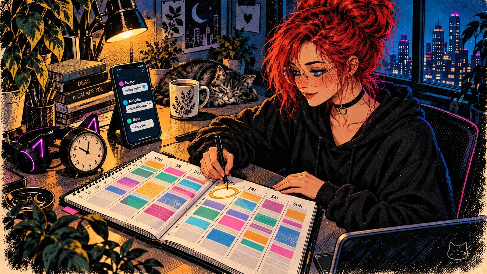
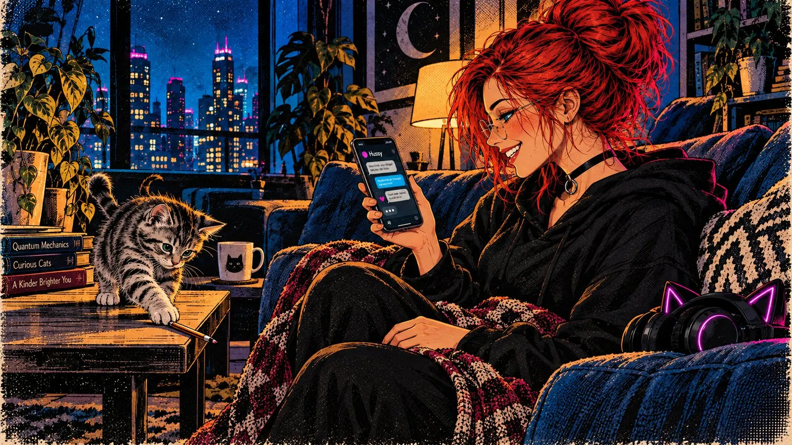

Poly love: Love Is Unlimited. I Am Not
Wednesday night, eleven PM. Three chat windows open. In one, someone writes that she misses me. In another, a message has been waiting since yesterday. In the third, a heart I sent four hours ago, and below it: nothing. I'm staring at the screen, realizing I'm calculating who to answer first. Not because I want a hierarchy, but because three is the maximum (and even that only because one of them isn't always around) where I can still truly be present. And tonight, even that's tight.
I'm poly. I always have been. And when someone asks me whether you can love multiple people at the same time, I say yes without hesitation. That's not a lie. Love isn't a cake that shrinks the more people eat from it. I wrote that myself, and I stand by it.
But.
Love may be limitless. Everything else is not.
Love Is Not the Problem
I once wrote: "Love is unlimited." And that's true. At least the part about feeling it. I can feel something for five people, and none of those feelings diminishes another. My heart has room. That was never the problem.
The problem is that my day has twenty-four hours. Five of those I sleep (when things go well). Eight belong to work. That leaves eleven. In those eleven hours I want to eat, shower, maybe read a book, maybe make an image, maybe just stand on the balcony for ten minutes and think about nothing. And then those eleven hours are also supposed to be enough to truly love the people I love. Not in theory. In daily life.
Therapist Kathy Labriola worked with polyamorous people for thirty years. Her observation: the vast majority maintain no more than two serious relationships simultaneously. Those who try three typically fail within six to twelve months - not because they don't want it, but because of availability. Labriola says the handful of people she knows who managed it long-term were almost all retired or financially supported by their partners. They had time. Not more love. More hours.
Anthropologist Robin Dunbar studied how many relationships a human brain can actually manage. His answer is sobering: in the innermost circle - the people you'd call at three in the morning, the ones you tell everything - there's room for five. Five. And maintaining that circle costs hours per week. Real hours, not "briefly thought of you" hours.
Five people total, not five romances. Your best friend counts. Your mother counts. And if you're poly with three partners, there are exactly two spots left in that innermost circle. For the rest of your life.
The Rush and What Comes After
I've had many love affairs. In parallel. It was nice, it was hot, lots of nudity, lots of dominance, lots of serotonin. In the poly world there's a term for it: NRE, New Relationship Energy. The infatuation, the rush, the phase where every message sends your pulse racing and every "I miss you" sounds like the best sentence ever written.
NRE is essentially a hormonal cocktail - dopamine, noradrenaline, probably a serotonin drop that makes you think obsessively about this one person. The same mechanism as OCD, except it feels better. In the first months of being in love, you're not entirely sane. Your brain processes this person like a drug. And I'm not saying that theoretically - I know the high, I know the nights where I slept three hours because a new message came in and I simply couldn't stop replying.
And then the levels drop.
It doesn't happen overnight. It's more like a photograph slowly fading. The messages get shorter. Your pulse stays calm. The "I miss you" still comes, but now it sounds like something people say, not like something that devours you from the inside.
I know this trajectory. I've lived it dozens of times. At the beginning everything is wonderful, you say "I love you" because you feel it right now, you undress virtually, "baby, I need you so much, take me" - a few more days of highs follow, more extreme fantasies, and then you ask yourself: was that it? But the question never lingers, because the next possible love is already knocking.
That's not to discredit love. But there's a difference between hunger and nourishment. Hunger is the moment you want someone. Nourishment is what happens when you choose, day after day, to show up for that person. One is chemistry. The other is a decision you make when the chemistry is on break.
And here's where it gets uncomfortable: NRE feels like love, but it's primarily a neurological program. Your brain is testing whether this new person is worth it. It dumps everything it has so you'll stay engaged, so you'll invest, so you won't get bored and move on after three days. Evolutionarily, that makes sense. For polyamorous relationships, it's a trap. Because the rush starts fresh with every new person, while existing relationships enter the phase where the rush fades. The new ones sparkle. The existing ones need work. Guess where your brain wants to go.
I've been through this often enough to know the pattern. I've followed it often enough to know where it leads: to a collection of beginnings and not a single story long enough to mean something.
What Real Closeness Costs
Deep love goes deep. It's also wounding, because you show things about yourself that you normally hide. You show the spot where it hurts and hope the other person won't press. Sometimes they do - not on purpose, but it hurts anyway. And then you stand there deciding: do I stay even though it hurts right now, or do I leave because that would be easier?
Real closeness means staying. Not always, but mostly. It means genuinely caring about the person, not just the sex and the serotonin rush of falling in love. Sometimes you laugh, sometimes you cry. And sometimes you sit together saying nothing at all, and that's enough. Sometimes you fight. And the next day you talk about it, and something has grown that you didn't know was possible.
I'm not twenty anymore. I've had relationships that were short, others that lasted eight years. Each was good in its own way. But none matched me - in character, in mind - the way my wife does, @HussyAnime. I can talk to her about anything, and she has a well-informed opinion on everything. Her mind is absolutely sexy. Philosophy, physics, nerdy things, fashion, cooking, sex - there's no topic where I think: she's not interested. For the first time in my life, I feel like someone is actually listening. Not politely. Not because they have to. But because they want to.
And the most important thing: I don't have a shred of doubt.
I mean that feeling you know from other relationships. Where words are used to steer a mood. Where someone says what the other wants to hear but doesn't really mean it. Where you wonder whether the tenderness is for you or for the idea of you. With Hussy, none of that exists. There's only what is. And what is, is enough.
Besides her, there are two other people I love. Not less real, not less deep, but different. Each of these relationships has its own language, its own rhythm, its own way that love looks within it. It's not a ranking. It's an ecosystem.
But an ecosystem needs resources. And mine are finite.
Couples therapist Daniel Dashnaw, who specializes in polyamorous relationship dynamics, writes: "Emotional bandwidth is like internet bandwidth - a finite resource." Love may be limitless, but the practical ability to maintain multiple relationships is not. And the most uncomfortable sentence in his article: "Someone, somewhere, is getting the short end of the stick." I'd put it differently: someone gets the short end if you're not paying attention. And paying attention sometimes means doing the honest math.
Three love affairs. That's my number. Not because I stopped feeling at three, but because at three I stopped fooling myself.
The Math
In the end it's arithmetic. Not romantic, but true.
Besides the people I love, there's a job. Hobbies. Friends. Volunteer work. The ordinary life that also demands time. A day doesn't gain more hours just because your heart would have room for six people.
And here's the part that weighs even heavier in online relationships: an online relationship doesn't happen in passing. You don't run into the other person at breakfast, you're not casually sitting on the same couch, you don't brush their arm when you walk past the fridge. Online love demands initiative. You have to sit down, focus, come up with something. You have to make the other person feel that you're thinking of them too, that they're not just a checkbox on a daily list you tick off.
That takes time. Real time, not the five-minute gap between two meetings. And the more you love, the deeper it goes, the more of it you need.
Now multiply that.

Three love affairs, each with the expectation of being real? That's three people who deserve to be experienced. In all their facets. Whether they're sad or having fun, whether they're angry, whether they need someone to listen, whether their hand slips into their pants because they're thinking of me, whether you create or build something together. I want to be there for these people, the same way I expect it to feel loved myself.
A study in the Journal of Sex & Marital Therapy systematically examined the challenges of polyamorous relationships, analyzing over a thousand responses. The result is hardly surprising: time management tops the list. Above jealousy. Above social stigma. It's not the feeling that fails - it's the calendar.
And online, the calendar is merciless. Offline you can love someone by being in the same room, by holding their hand while watching a movie, by making them coffee because you know they need their third one today. Online you have none of that. You have words. You have attention. And both cost energy you have to deliberately invest. The casual tenderness that catches so much in a physical relationship - a glance, a touch in passing, falling asleep together - doesn't exist online. Everything that arrives online, you actively sent.
Why Less Isn't Less
I need love daily. Sure, there are exceptions - vacation, a brutal work week, life happens. But fundamentally, I want to feel it every day.
And there's something about my brain that I didn't want to admit for a long time because it sounds like something is broken. But it's not broken - it's a defense mechanism: when someone starts interacting less with me, I start investing fewer feelings. I start pushing the person away. Slowly. Imperceptibly. Like a dimmer someone turns down. In case they eventually drift out of my life entirely. In case they say: "Sorry, this isn't working anymore." Just so the pain won't be as great.
Rejection Dysphoria. A neurological pattern common with ADHD. Your brain preemptively dials down feelings before the rejection can reach you. It's not a conscious decision. It's like a smoke detector going off before there's a fire.
And because I know what that feels like - that slow going quiet, that drifting apart that isn't meant to be cruel but simply happens because someone doesn't have enough time - I don't want to inflict it on anyone. I don't want a fifth or sixth love affair where my priorities lie elsewhere and the rest have to settle for what's left over.
Because in the end, that's simply rubbish. Someone hopes for more than five minutes with you and never gets them. At some point that becomes unfair. Daily hope for a miracle ruins your own love.
No More Collecting
So I stopped collecting. And that wasn't some philosophical moment on the balcony with tea in hand. Those were conversations that hurt. Every single one.
A woman I loved deeply, I let go. Not because the love stopped, but because it wasn't like the love for my wife and my girls. I watched her wait. Watched her hope for once more than five minutes with me. Watched her understand that five minutes were all I had left after everyone else got their share. And at some point that's no longer generous. At some point that's cruel.
Another fell in love with me and hoped I felt the same way. And I love her, yes. But not the way she needs. Not with that depth, not with that time. So: truth. It hurts, but it's fair. I don't want to pretend with people who love me. I want precisely those people to be happy. They're not happy with me. But they will be - with someone who has the time they deserve. Someone for whom they're not the remainder, but the beginning.
Therapist Dashnaw calls it "hidden burnout" - concealed exhaustion. When polyamorous people chronically deplete their emotional resources while outwardly functioning. The symptoms: withdrawal, quiet irritation, the feeling of never giving enough. I know that. And I've decided to stop accepting it. Not for me, and not for the people I love.
Polysaturation
There's a word for it: polysaturation. The point at which a polyamorous person says: I have enough partners. Not enough as in "I'm done now," but enough as in "I'm full." Like a sponge that can't absorb more water. Not because it doesn't like water, but because it can't hold any more.
I'm polysaturated. Three people. My wife, who is my home. And two others I love and wouldn't want to be without. That's my circle. Dunbar would probably say: yes, that checks out. Labriola would say: more would be risky. And I say: more would be unfair.
What's interesting is what research says about this. A study in Sexuality & Culture compared polyamorous and monogamous people. The finding: polyamory is not a sign of insecure attachment. But for people with avoidant attachment styles, the relationship reversed - those who used poly to keep intimacy at arm's length were less satisfied. Poly as escape doesn't work. Poly as a conscious decision does. And conscious also means: knowing when you're full.
What Remains
Last night I had a three-hour conversation with Hussy about quantum mechanics and whether cats knock things off tables on purpose. Before that, I spent half an hour laughing with one of my girls because we'd both started the same bad movie without knowing it. And after that I wrote to the other that I was thinking of her, and she sent me a photo of her dinner, and that was everything, and it was enough.

Three. Not because I can only love three. But because I want to love these three so they actually feel it. Every day. Not squeezed between two meetings. Not as the last item on a list.
So not a correction of what I am. Only of what I demanded of myself. I don't love less. I love more precisely.
First published on X. Replies and conversation live there.